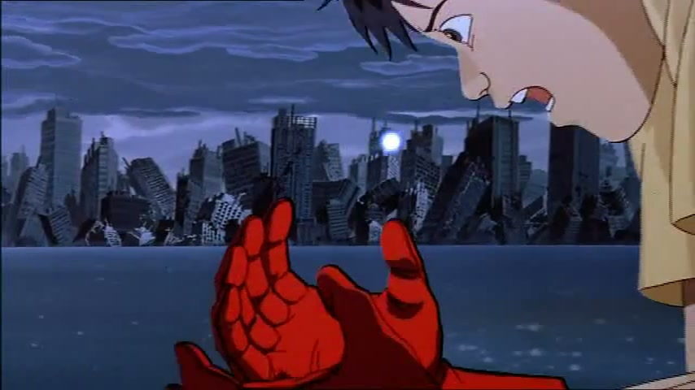

My best friend Tetsuo’s light

The film is iconic. To science fiction. Cyberpunk. Body horror.
But this particular moment was one I didn’t remember from when I watched this as a kid. This moment was so human. Tetsuo, in his fear, creates a universe that he commits into the palm of Kaneda’s hand.
- Source:
- Otomo, Katsuhiro, dir. (1988). Akira (アキラ). Tokyo Movie Shinsha / Toho. Released 16 July 1988.
- via:
- re-watching the 4K remaster at the Hollywood Theatre on my birthday this year, with my partner. I first watched it as a teen.